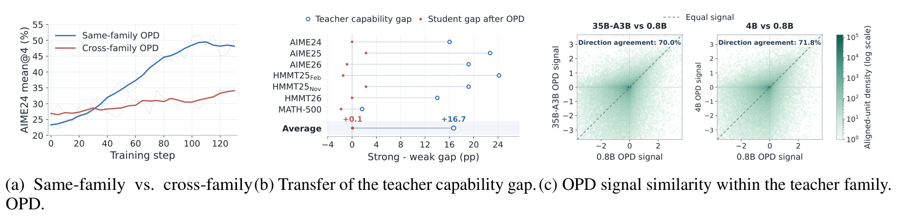
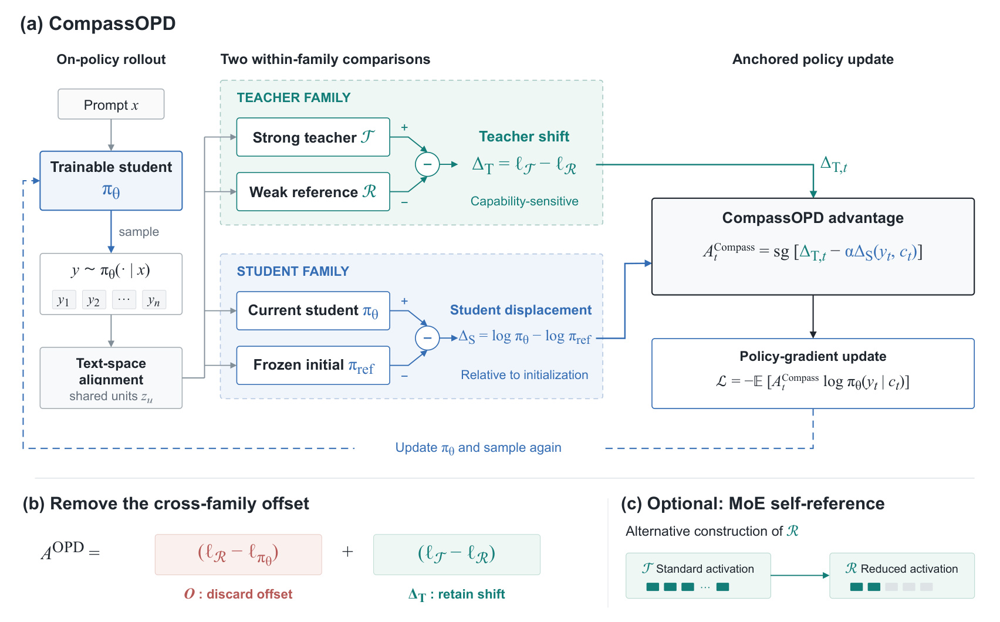
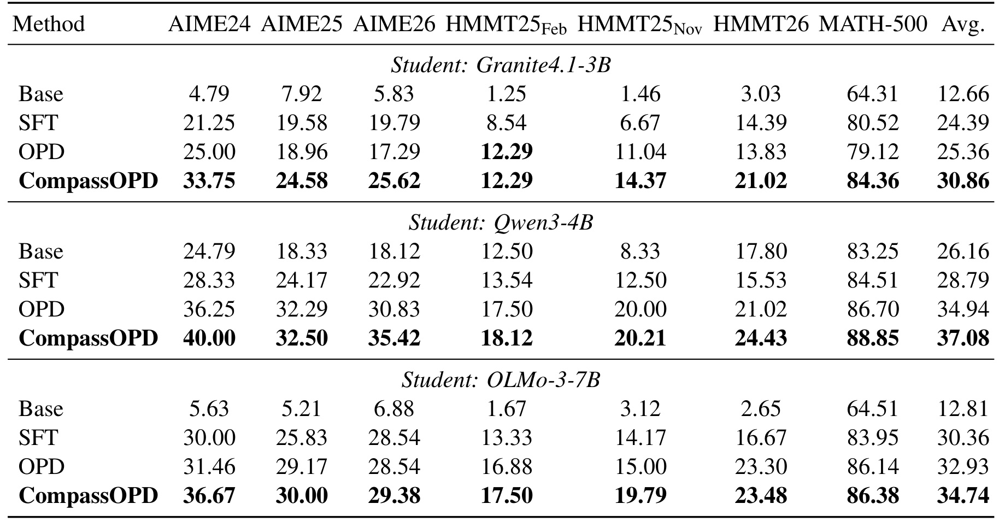
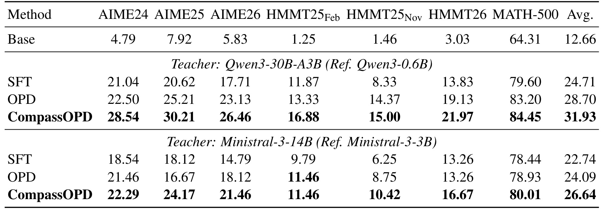
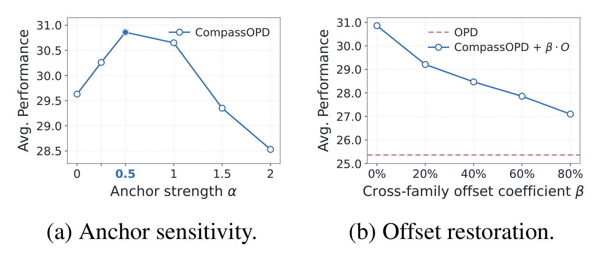
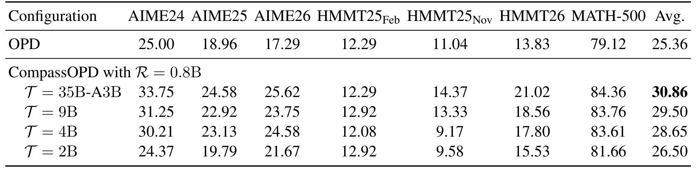
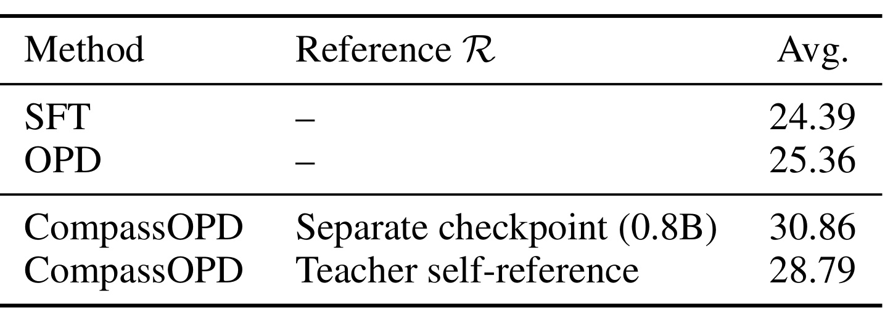

CompassOPD：用教师家族内似然变化改进跨家族在线蒸馏
- 论文标题：CompassOPD: Cross-Family On-Policy Distillation via Within-Family Likelihood Shifts
- 作者：Naibin Gu、Qingyi Si、Chenxu Yang、Chuanyu Qin、Junhao Zhou、Peng Fu、Zheng Lin、Weiping Wang。
- 机构：中国科学院信息工程研究所、中国科学院大学；合作机构京东。Peng Fu 为通讯作者。
- 发表状态：arXiv 预印本 v1，首次公开于 2026-09-09 13:31:57 UTC；阅读日期 2026-09-11（北京时间）。
- 论文入口：arXiv:2609.10154。
- 代码状态：未核验到本文独立公开代码或项目入口；正文引用的 VERL、vLLM 与其他蒸馏方法不能当作本文代码仓库。
- 阅读范围：完整 12 页 PDF，包含正文、参考文献、附录 A 的六项实现说明和附录 B 的目标策略证明；全部 3 张 Figure 与 4 张 Table 纳入下文。
CompassOPD 关注大模型跨家族蒸馏时“教师更强但学生收益没有同步增加”的问题。论文把强教师监督分解为参考诱导的跨家族偏移和教师家族内部变化，结合学生自身起点构造训练信号；下文沿动机、方法与实验解释这一设计及其证据边界。
即使分词器已经对齐，强教师与学生的绝对似然差仍可能被跨家族偏移主导，遮蔽教师能力提高所带来的更新方向；如何传递能力相关的相对变化，同时避免学生不断偏离自己的有效起点，是本文要解决的核心问题。
1. 背景和问题
跨模型家族的在线策略蒸馏常有一个反直觉现象：教师的独立解题能力显著更强，学生从它那里学到的增量却很有限。CompassOPD 研究的就是这个落差。论文并不把所有困难归结为学生容量不足，也没有简单换用更大教师；它把注意力放到逐位置监督的来源上。两个模型对同一段学生生成文本给出的绝对似然之差，究竟多少来自教师能力提高，多少只是两套模型原本就存在的概率偏好差异？如果后者长期决定更新符号，学生可能一直朝一个弱教师也会给出的方向移动，强教师的额外能力只影响步子大小，未能改变学习方向。
这里的“家族”按发布系列定义。Qwen3 与 Qwen3.5 在本文中属于不同家族，即使品牌相同也不能归为同一家族实验。不同系列可能使用不同词表、训练配方和策略初始化；这些差异会同时作用于输出风格、文本切分、推理习惯以及概率校准。对于已有小模型产品的团队，选择外部强教师有很自然的动机：原有家族未必继续发布足够强大的大模型，或者最佳专长来自另一套体系。跨家族蒸馏因而不是少见的特殊情况，而是异构模型复用能力时经常遇到的接口问题。本文把这种接口拆成“如何比较同一文本”与“比较结果是否值得学习”两个层次。
传统离线序列蒸馏先让教师生成答案，再用这些答案对学生做监督微调。它提供的是教师访问过的文本轨迹；学生部署时一旦生成不同的前缀，后续状态可能偏离训练集。在线策略蒸馏让当前学生自己生成回答，再由教师在这些学生实际走到的状态上逐位置评分，因此能覆盖学生自己的错误分支和表达方式。标准 OPD 的监督强度通常来自教师与学生的对数似然之差：教师相对更支持的已采样动作被鼓励，教师相对更不支持的动作被压低。这是密集的局部反馈，不必等整道题得到正确性奖励才更新，也不要求教师替学生重新写一条完整解题轨迹。
然而，密集反馈不保证它携带的就是目标能力。教师给某个短语高概率，可能因为该系列惯常使用它；学生给同一短语低概率，可能因为更偏好另一种等价表述。更复杂的是，长推理中一个局部动作的概率还依赖当前上下文、已生成的格式和模型此前见过的训练分布。把教师与学生的分布直接拉近，会把这些因素和推理能力一起传过去。论文先安排教师轨迹 SFT 来减少风格与格式差异，再比较后续 OPD，这一点很重要：观察到的跨家族瓶颈是在已有适配初始化之后仍然存在，不能简单解释为学生从未见过教师的作答风格。
词表不一致是另一个明显问题，但本文认为解决它还不够。教师可能把某段文本切成两个 token，学生切成三个；若按 token 序号直接比较，第一个位置之后就可能根本不是同一内容。文中沿共同文本边界构造对齐单元，对同一文本跨度的评分进行比较。这个过程使不同模型的监督在文本层面具有可对应的对象，却没有保证两种概率标尺已经获得同样的能力含义。本文的新意不是再次发明通用 token 对齐，而是在标准 OPD 和新方法使用同一对齐过程的前提下，重新设计进入策略更新的分数。

Figure 1 将问题证据分为三个互相补充的观察。左图固定 Qwen3-4B 学生，同家族教师采用 Qwen3-30B-A3B-Instruct，跨家族教师采用 Qwen3.5-35B-A3B。横轴是训练步骤，纵轴是 AIME24 mean@4；同家族曲线持续上升，跨家族曲线早期增长后明显变缓。这个纵轴口径是动机实验特有的 mean@4，不能与后面七基准、每题十六次生成的主结果混写。它揭示训练轨迹不同，但只凭两条曲线还不能排除教师系列、初始化或数据相容性等共同变化因素，因此作者继续做后面两项检查。
中图把两个 Qwen3.5 教师的能力差距与它们分别蒸馏出的 Qwen3-4B 学生差距并列。空心点表示教师差，实心点表示学生差；跨七个基准教师平均差距达到 16.7 个百分点，学生仅差约 0.1 个百分点。这不是“强教师没有能力”，而是强弱教师之间很大的可测差距没有通过标准监督接口有效转移。右图再固定学生生成的对齐动作，比较 0.8B 参考与较大教师给出的 OPD 信号。35B-A3B 与 0.8B 的更新方向一致率为 70.0%，4B 与 0.8B 为 71.8%；颜色表示对齐单元密度的对数尺度，虚线表示信号数值相等。落在同号象限只代表增减方向相同，不能说数值相同，更不能说这些位置没有任何有用信息。
三个观察共同支持一种可测试的解释：同一家族的小参考模型已经贡献了较大一部分跨家族监督方向，强教师在它之上的增量被混合信号遮住。需要谨慎的是，一致率本身不证明“小参考那部分全是风格噪声”，更不构成能力、风格和校准因素的因果分离。假如某些正确推理模式本来就被强弱教师共同掌握，删除共同部分也可能丢掉有益信号。作者实际提出的是一个基于参考模型的操作性分解，然后用恢复被删成分的消融验证它在给定配置中的效果。把它表述为“通过弱教师消掉所有风格”，会比原文证据走得更远。
从研究问题的边界看，本文关心的是开放权重模型之间、能取得逐 token 似然的跨家族后训练，主要验证数学推理。它没有证明任意只返回文本的商业 API 都能提供所需信号，也没有给出推荐点击率、工具调用成功率或安全对齐的迁移结果。方法与普通奖励建模也不同：它没有独立学习一个判断答案优劣的奖励网络，而是利用强弱教师对同一个学生动作的相对偏好变化，构造能力敏感但并非正确性标签的稠密反馈。这个定位决定了后面既要看主效果，也要看参考选择、学生锚点和计算代价。
2. 方法
2.1 共享文本边界与教师家族内差分
符号解释与采样对象。记输入为 $x$，当前学生策略为 $\pi_\theta$，学生生成的回答为 $y\sim\pi_\theta(\cdot\mid x)$。在第 $t$ 步，上下文为 $c_t=(x,y_{\lt t})$。教师 $T$ 给同一动作打分，标准 OPD 的优势与损失对应原文式（1）和式（2）：
符号解释：$A_t^{\mathrm{OPD}}$ 为第 $t$ 个学生动作的优势，$T$ 为冻结教师，$\pi_\theta$ 为当前学生，$y_t$ 是学生已采样 token，$c_t$ 为前文上下文，$\mathcal L$ 为策略损失，$\mathbb E$ 表示按学生轨迹采样求期望。这里把正文所说 detached 信号显式写为停止梯度算子 $\operatorname{sg}$。当优势为正，梯度更新倾向提高已采样动作概率；负值则倾向压低。它是按当前学生轨迹采样的策略更新，不能当成对全部词表做监督交叉熵。跨词表时，原文式（3）先把回答分割成 $U(y)=\{z_1,z_2,\ldots,z_M\}$，每个 $z_u$ 是双方共享文本边界定义的单元。记模型 $M$ 对它的对齐分数为 $\ell_M(z_u\mid c_u)$；这个符号是“对齐后的分数”，不能无条件等同于一个原生 token 的对数概率。
附录 A.4 说明，一对一匹配使用对应 token 的对数似然，若一个文本跨度在不同模型中对应不同数量 token，则在各自跨度内平均 token 对数似然，以减弱切分粒度造成的尺度差异。教师和参考对同一文本打分后得到的差值，会分配给该跨度内每一个学生 token；学生与学生冻结参考的差则直接按学生 token 计算。无法形成一致文本边界的位置被对齐 mask 排除，不参与损失。这里的平均并非跨度总概率：总对数概率通常需要求和，平均是实现上的归一化评分约定。因此理论中的共同文本动作空间和实现中的逐 token 回填必须区分，不能把二者之间的近似隐藏掉。标准跨家族 OPD 使用相同对齐程序，实验比较的是信号结构变化，而非某一方法获得了更好的对齐覆盖。
引入教师家族内低能力参考 $R$ 后，式（4）至式（7）把标准对齐信号分解为：
符号解释：$z$ 为共享文本边界下的对齐动作，$c$ 为其前文，$\ell_M$ 表示模型 $M$ 的对齐似然分数；$T$ 与 $R$ 分别是强教师和教师家族内弱参考，$A_T$ 与 $A_R$ 是各自相对当前学生的标准信号，$O$ 表示参考诱导的跨家族偏移，$\Delta_T$ 表示强弱教师差分。这个恒等式先说明两项如何相加，下一式再展示学生项消去的过程。
符号解释：此式沿用上式全部记号，两处 $\ell_{\pi_\theta}$ 是同一个当前学生对齐分数，因而可以消去；保留下来的 $\ell_T-\ell_R$ 才是进入新方法的教师端信号。$O$ 是以低能力参考为教师时本来就存在的跨家族偏移，$\Delta_T$ 是教师家族从参考到强教师的似然变化。两个项是精确加减得到的代数分解，论文随后选择舍弃前者并保留后者。学生分数在差分中消去，使教师端信号不再直接要求学生追逐另一个家族的绝对概率。正的 $\Delta_T$ 表示强教师比弱参考更支持这个已采样动作；负值意味着强教师相对弱参考更不支持。它只描述相对支持的改变，不能保证动作正确，也不保证正值动作比同一上下文下所有其他动作都好。参考的“低能力”属性来自模型配置与评测背景，而不是公式自动识别出来的能力轴。

Figure 2 左侧的循环明确了谁负责探索：可训练学生根据输入生成回答，后续评分围绕这条已经生成的文本进行。中间绿色区域包含冻结强教师和冻结弱参考，两者之间作差得到教师家族变化；蓝色区域比较当前学生与其冻结初始版本，得到学生自己的位移。右侧把这两种家族内变化组合成优势，再通过策略梯度更新学生，虚线返回到新的采样轮次。图中的两个减号来自不同目的：教师端减弱参考用于构造相对能力信号，学生端减初始策略用于衡量当前模型已偏离多少，不能把两者合并成一个普通教师参考网络。
图下方左侧展示被删去的跨家族偏移与被保留的家族内变化，因此它也是理解“学生分数消去了什么”的直观入口。消去只发生在教师变化的代数构造里；学生自身的概率仍然进入最终优势和策略损失，训练也仍然依赖当前学生轨迹。右下角的 MoE 自参考是弱参考的一种替代来源，不是必选组件：标准实验用独立的 0.8B 检查点，自参考实验改用同一教师减少专家激活后的配置。整张图不是教师文本替换学生文本的生成流水线，而是对相同学生动作进行多路冻结评分的训练流水线。
实现上，图中存在四个逻辑角色，却不意味着必须同时保留四套完全独立权重；MoE 自参考可复用教师检查点，训练基础设施也可以调度冻结评分。但逻辑职责必须保留，否则很容易把参考误设为不断同步当前学生的模型，或把弱参考当成另一个参与训练的学生。教师与参考评分都要对应同一段文本和前文，学生初始模型也应在同一 token 位置评分。若缓存了早期轨迹的分数再用于后续完全不同的采样上下文，就不再是图示的在线监督。本文没有给出这种缓存近似的有效性证据，不能为了吞吐量直接把它视为等价实现。
2.2 学生初始策略锚定与目标分布
只使用教师家族差分会产生持续推动：即使某个动作已经被学生大幅提高概率，它仍可能收到原先的正向信号。论文因此保存 SFT 后、OPD 开始前的学生副本 $\pi_{\mathrm{ref}}$，整个蒸馏期间保持冻结。原文式（8）和式（9）为：
符号解释：$\Delta_S$ 是当前学生相对冻结初始副本 $\pi_{\mathrm{ref}}$ 的对数概率位移，$A_t^{\mathrm{Compass}}$ 是最终优势，$\operatorname{sg}$ 阻断优势分支梯度；$y_t,c_t$ 仍是学生 token 和前文。$\Delta_{T,t}$ 是文本对齐后分配到学生位置的教师差分，$\alpha$ 控制锚定强度。训练刚开始时当前学生等于冻结参考，学生位移为零，更新完全由教师差分决定。若学生已沿正方向提高某动作的概率，位移变正，减去它便对继续提高施加反作用；如果学生已沿负方向降低概率，位移为负，对该项取负则抑制继续降低。这个反馈既保留了学习空间，也避免把强教师相对弱参考的偏好无限放大。锚点不是奖励裁剪，也不是每轮刷新一次的旧策略；它来自固定的初始学生，并直接定义了“变化从哪里开始算”。
停止梯度决定实际优化目标。优势里含有当前学生概率，但计算策略梯度损失时把整个优势看成常量，梯度通过外面的学生对数概率传播。若让自动微分同时穿过优势中的学生位移，就会得到不同目标的额外梯度项，不能声称只是换了一个等价写法。实际训练仍使用原有在线策略优化程序，把 OPD 优势替换为此处的优势；论文并没有要求在每个训练步骤显式求出完整词表上的最优分布。
为了解释锚定的方向，式（10）在固定上下文 $c$、固定教师差分和固定参考策略的共同文本动作空间上研究如下目标：
符号解释：$J_{\mathrm{Compass}}$ 是固定上下文目标，$\pi$ 是此处待优化的文本动作策略，$z$ 是动作，$\Delta_T$ 为固定教师差分，$D_{\mathrm{KL}}$ 是方向从当前策略到学生参考的 KL 散度，$\alpha$ 为正的锚定系数。第一项鼓励选择获得更高教师家族增量支持的动作，第二项约束策略距离学生自己的起点。对于 $\alpha\gt0$ 且参考在动作空间上为正、相关量有限的情况，式（11）及附录式（13）给出：
符号解释：$\pi^*$ 是固定上下文目标的最优策略，$\pi_{\mathrm{ref}}$ 为冻结学生初始分布，$\exp$ 为指数函数，$Z(c)$ 是对所有对齐动作求和的归一化常数；$\Delta_T/\alpha$ 控制相对重加权强度。这是一种以学生参考概率为底座的指数重加权。教师差分相同的动作仍按原学生相对偏好分配概率，差分更大的动作得到更强的指数倍率；增大锚点强度会减弱这一倍率的对比。它清楚说明目标一般不等于强教师分布：学生的初始知识和家族偏好仍在目标里，教师提供的是改变方向。附录 B 把式（11）代回目标，得到式（14）的 $J_{\mathrm{Compass}}(\pi;c)=\alpha\log Z(c)-\alpha D_{\mathrm{KL}}(\pi\Vert\pi^*)$，利用 KL 非负证明最优性。这个证明是固定上下文上的分布优化结论，没有证明有限参数神经网络经过有限在线采样训练一定收敛到该分布，也没有证明所有任务准确率都会提高。
2.3 MoE 自参考与冻结评分流程
独立小模型参考并不总是可得。某些教师系列只开放大型模型，直接找另一家族小模型又会破坏家族内比较的设计。论文利用 MoE 的激活配置构造同一检查点的两种能力状态：标准 Qwen3.5-35B-A3B 每个 token 激活八个细粒度专家并保留共享专家；弱参考保留共享专家，只激活一个细粒度专家，约对应 2B 激活参数。两种模式共享全部模型权重、分词器和输入上下文，差别来自专家激活数量。按照附录 A.5，它们需要分别做两次冻结前向，取同一对齐文本上的似然差作为 $\Delta_T$。
这个实现减少的是对“独立发布的弱参考检查点”的依赖，并非把弱参考评分变成免费操作。共享权重有利于避免额外检查点的存储与加载管理，但激活专家更少仍会产生真实计算，路由改动也需要评分服务支持。标准设置还需维护冻结学生参考来计算位移。因而部署讨论应区分参数存储、每 token 激活量、评分吞吐和训练墙钟时间：这几项不是同一个成本。论文没有给出覆盖这些维度的效率表，不能从约 2B 激活参数直接推断吞吐提升比例，或者写成“无额外开销”。
完整训练过程因此是：从共同的教师轨迹 SFT 检查点初始化学生与其冻结副本；学生持续采样；冻结强教师与弱参考给同一文本评分；共享文本边界把教师差分映射回学生位置；当前学生与初始副本形成位移；对合成优势停止梯度后执行策略优化。只有当前学生更新，另外三个逻辑角色固定。这样的分工使实验能把性能差异归到监督构造上，也给复现划出了最小依赖：逐位置分数访问、对齐与 mask 实现、稳定初始策略和足够的多路评分资源，缺少其中任一环节都需要另做近似误差验证。
3. 实验结果
3.1 训练、评估与可比性
实验分为教师轨迹监督冷启动和后续在线蒸馏两个阶段。冷启动使用 OpenThoughts-114k，附录列出其中数学题 89,120 道、代码题 19,904 道，以及生物、物理、化学、逻辑谜题合计 4,933 道。作者把原答案替换成对应强教师在 non-thinking 模式下生成的响应，只保留正常结束且非空的样本。全参数 SFT 训练一轮，最大序列长度 32,768，学习率 $2\times10^{-5}$，权重衰减 $10^{-6}$，余弦学习率调度、百分之十预热，batch size 为 32。这个阶段本身会产生很大的能力提高，所以评价 CompassOPD 的独立贡献必须以同一 SFT 后的 OPD 为主要对照，不能只拿最终模型与未经适配的 Base 比较。
在线蒸馏对 Qwen3-4B 使用 DAPO-Math，对 Granite4.1-3B 与 OLMo-3-7B 使用 DeepScaleR-Preview。采样温度为 1.0，top-p 为 1.0，提示与回答的最大长度分别为 2,048 和 24,576 token。优化器 AdamW 采用恒定学习率 $10^{-6}$，不预热；主文报告 batch size 128，附录报告 PPO mini-batch 64 与每 GPU micro-batch 1，应保留这些不同层级的批大小名称。所有实验使用八张 NVIDIA H200，VERL 负责训练，vLLM 负责生成与教师评分。方法只使用蒸馏信号，不加入任务正确性奖励；相同对照组保持初始化、文本对齐、训练步数和学生响应采样数量一致。这些是方法比较条件，但并不自动等价于总 FLOPs 或训练时间完全相等。
主评估包括 AIME 2024、2025、2026，HMMT 2025 年二月、十一月与 2026，以及 MATH-500，共七个数学推理基准。每个模型使用本身的聊天模板，每题独立生成十六个响应，温度为 0.7、top-p 为 1.0、top-k 为 40、presence penalty 为 2.0，最长生成 24,576 token，再由 EvalScope 自动评分。每个基准的准确率是在全部采样响应上求平均；Avg. 是七个基准准确率的无权平均，因而不是把七个数据集所有题目混在一起计算的总体准确率，也不是十六次中只要一次正确即算成功的 pass@16。这里的“十六次独立生成”用于减少单次生成偶然性，不是十六个独立训练 seed；论文没有据此提供训练随机性的置信区间。
3.2 三种学生家族的主结果

Table 1 固定强教师 Qwen3.5-35B-A3B 与弱参考 Qwen3.5-0.8B，在三组学生内部对照 Base、SFT、OPD 和 CompassOPD。Granite4.1-3B 的平均准确率依次为 12.66、24.39、25.36 和 30.86。可以看到教师轨迹 SFT 已带来很大改观，而标准 OPD 在此基础上只增加 0.97 个百分点；CompassOPD 相对标准 OPD 提高 5.50 个百分点，相对 SFT 提高 6.47 个百分点。摘要中的“最高提升 5.50”来自这一组七基准无权平均，不能把它写为所有学生的平均收益，也不能当成相对提升百分比。单任务上，AIME24 从 OPD 的 25.00 提高到 33.75，HMMT26 从 13.83 到 21.02，而 HMMT25Feb 同为 12.29，说明提升不是每一列都严格增加。
Qwen3-4B 的情况不同。它的 Base 平均为 26.16，SFT 为 28.79，标准 OPD 已能达到 34.94，CompassOPD 进一步达到 37.08，相对 OPD 增加 2.14 个百分点。这里标准跨家族蒸馏原本就有效，新方法是在有效基线上继续获益，而不是只修复一个完全失败的学生。AIME26 从 30.83 到 35.42，HMMT26 从 21.02 到 24.43；AIME25 的提升则只有 0.21 个百分点，HMMT25Nov 也是 0.21。结果应按列阅读，不能用平均提升暗示所有题型都获得相近幅度的改善。对于本来就很高的 MATH-500，86.70 到 88.85 的变化与低分竞赛基准也有不同的剩余空间。
OLMo-3-7B 从 Base 的 12.81 经 SFT 到 30.36，标准 OPD 为 32.93，CompassOPD 为 34.74，相对增加 1.81 个百分点。其 AIME24 从 31.46 到 36.67，HMMT25Nov 从 15.00 到 19.79，但 HMMT26 只从 23.30 到 23.48，MATH-500 从 86.14 到 86.38。三组共二十一个学生与基准组合中，二十项提升、一项持平，支持效果方向具有跨学生一致性；仍应区分“多个配置的点估计方向一致”与“每一项都有统计显著性”。表中没有训练 seed 方差、误差条或显著性检验，不能给小幅差异加上未报告的统计保证。
这张表最值得保留的观察是不同学生对原始 OPD 的响应差异：Granite 原基线增量很小，Qwen 的原基线增量相当明显，OLMo 介于其中，而重构监督在三者上都继续改善。它弱化了“只对坏基线有用”的解释，也提醒读者跨家族蒸馏的难度不能仅由参数量排序。三种学生的训练数据选择、原始能力和家族背景并不完全相同；合法比较是同一学生组内两种蒸馏方法的差，不应把跨组平均分直接变成容量效率结论。此外，所有新方法的默认锚点系数都是 0.5，但参考依赖和额外评分成本仍需在实际复现时计入。
3.3 更换教师家族后的收益

Table 2 固定 Granite4.1-3B 学生，分别选择 Qwen3-30B-A3B-Instruct-2507 搭配 Qwen3-0.6B，以及 Ministral-3-14B-Instruct-2512 搭配 Ministral-3-3B-Instruct-2512。前一组的 SFT、OPD 与 CompassOPD 平均准确率为 24.71、28.70、31.93，后者分别为 22.74、24.09、26.64。新方法相对标准 OPD 的收益分别为 3.23 与 2.55 个百分点。这把实证从一种教师系列扩大到另外两种，说明家族内差分的收益并不只出现在 Qwen3.5 的一个特定强弱模型配对上。把 Table 1 与 Table 2 合起来，实际是五个教师学生配置，而不是三个教师乘三个学生的九组完全交叉实验。
在 Qwen3 教师组内，AIME24 从 22.50 到 28.54，AIME25 从 25.21 到 30.21，HMMT25Feb 从 13.33 到 16.88；七项均改善。Ministral 教师组内，AIME25 从 16.67 到 24.17 的变化较大，HMMT25Feb 则保持 11.46，其他列均提高。两组十四项对照共有十三项改善、一项持平，和主结果的方向一致。不过这个实验没有说明“凡是同家族小模型都能作为同样好的参考”；Qwen3 与 Ministral 使用了不同参考规模，教师系列本身也不同。结果支持这两个具体配对可行，不能替代一个全面的参考模型选择研究。
组间比较尤其需要谨慎。原文为每个教师家族生成对应的冷启动响应，两种蒸馏方法在同一教师组内共享 SFT 起点；但跨组 SFT 的训练答案来源发生变化，平均起点从 24.71 变为 22.74。因此不能拿最终 31.93 与 26.64 的差就归因于家族内差分“更偏好 Qwen”，也不能把两组全部优势归到教师在在线阶段的能力上。教师响应对冷启动的适配、参考模型的相对质量和教师自身概率结构都可能影响结果。作者控制的是组内方法对照，笔记也应沿同一个控制边界解读。
对于需要选择教师的实际训练任务，这些结果提供了一个候选方向：不只比较强教师独立测评分数，也要检查它的家族是否存在可用且合适的参考模型，以及参考差分能否在学生轨迹上产生有区分度的信号。这里的“合适”不能只读参数量：小模型若缺少基本领域能力，差值可能夹杂格式和语言质量的大范围变化；两个模型若过于接近，差值又可能缺少有效对比。本文的教师规模实验继续考察了后一种情况，但没有把所有参考选择维度系统扫过。因此表格为教师扩展提供支持，同时保留了筛选参考的研究空间。
3.4 学生锚点与被删偏移的消融

Figure 3 在 Granite4.1-3B 学生、Qwen3.5-35B-A3B 强教师与 0.8B 参考这一个配置中分析组件。左图横轴是锚点强度 $\alpha$，纵轴为平均准确率。只保留教师差分、令锚点为零时已有明显收益；从零增加到 0.5 后性能达到图中最高，1.0 时仍相近，继续增强则下降。它支持适度学生参考约束有帮助，也展示约束过强会限制有效更新。图中的点是离散超参数试验，不是连续函数被完整测量，不能据此说精确最优值已被全局定位；也不能把这个配置上的最佳 0.5 视为每个模型、每种任务的普遍最优常数。论文在主实验采用该值，属于其已验证训练配方的一部分。
右图保持学生锚点为 0.5，逐渐把被移除的跨家族偏移加回来，对应原文式（12）：
符号解释：$A_t(\beta)$ 是恢复部分偏移后的优势，$\beta$ 是恢复比例，$\Delta_{T,t}$ 是教师差分，$\alpha$ 为固定锚点系数，$\Delta_S$ 是学生位移，$\operatorname{sg}$ 保持优势停止梯度。$O_t$ 是分配到学生位置的偏移，$\beta=0$ 对应原始 CompassOPD；图中恢复比例从零增加到百分之八十，平均准确率随之单调下降，逐渐损失相对标准 OPD 的优势。红色虚线是标准 OPD 分数，用来提供参照。这里锚点保持不变，所以恢复偏移后的目标并不能简单视为在横轴某处自动等于原始 OPD；即便恢复完整偏移，额外的学生锚点仍在。正文用这种控制变量方式说明偏移会伤害此配置的能力转移，而不是只展示两个训练方案最终分数不同。
相较于动机图的方向一致率，恢复实验更直接检验了被删项对训练结果的影响，因此是整篇论文的重要证据。但它仍然只考察一个学生教师配对和一条恢复路径，尚未在所有教师家族、所有超参数设置上重复。它没有把偏移分解成纯风格、知识、校准和推理成分，也没有证明每一个 token 上的偏移都有害。准确表述是：在固定锚点和该实验协议下，加入更多参考诱导的跨家族成分使最终平均表现恶化。这个结论足以支持删去整项的工程有效性，却不足以声称已经发现了语言模型概率中的独立“风格噪声变量”。
3.5 固定参考后改变教师规模

Table 3 固定 Qwen3.5-0.8B 参考，把教师从 35B-A3B 依次换成 9B、4B 和 2B，对应 Granite4.1-3B 的平均准确率为 30.86、29.50、28.65 和 26.50。随着教师规模接近参考，平均收益逐渐缩小，与教师参考差分的信息强度可能减弱的解释一致。对照行标准 OPD 的 25.36 使用的是最大的 35B-A3B 教师，因此即使 2B 教师配 0.8B 参考，仍比这个强教师直接监督基线高 1.14 个百分点。这是对“更大绝对教师分数一定是更好监督”的一个有意思的反例，表明监督构造有时能比增大评分模型更关键。
不过，该实验的成本与能力含义都有边界。四个新方法配置使用同一个由 35B-A3B 教师响应训练的 Granite SFT 检查点。因此 2B 在线教师配置已经继承了强教师在冷启动阶段产生的数据收益，不能写成“全流程只用 2B 教师超过 35B 教师”，也不能把它当作从零开始的小教师完全替代大教师。标准 OPD 行仅报告一个大教师版本，没有逐一列出 9B、4B、2B 的同规模 OPD 全套对照，所以表中最直接回答的是固定参考时新方法的教师规模趋势，而不是每一个规模上的方法收益曲线。
按单任务看，平均趋势也不是所有列都严格单调。HMMT25Feb 中 9B 与 2B 都为 12.92，高于 35B-A3B 的 12.29；AIME26 中 4B 的 24.58 高于 9B 的 23.75。若只复述平均值，容易把这种异质性遮住。作者的规模分离解释是与平均结果相符的一种机制读法，并没有控制所有模型训练配方差异来隔离参数规模的纯因果效果。对于 MoE 的 35B-A3B，还要区分总参数与约 3B 激活参数，不能按名称中的 35B 与其他稠密模型参数直接换算推理计算量。
表中没有速度、显存、FLOPs 或训练墙钟列，因此它适合支持有效性而不适合计算具体性价比排名。若实际选用较小在线教师，需要把强教师生成 SFT 数据的一次性成本、后续强弱双模型评分成本和学生参考评分成本分开记账，再与达成同一质量目标所需的训练步数一起比较。论文保持对照组训练步数和学生采样数量匹配，但这与保证端到端等计算预算是两回事。本文结果提供了可复现的实验候选，尚未直接给出最佳成本收益工作点。
3.6 MoE 自参考的收益与代价

Table 4 只改变参考构造方式，其余仍是 Granite4.1-3B 学生和 Qwen3.5-35B-A3B 教师。SFT 为 24.39，标准 OPD 为 25.36，独立 0.8B 参考版本为 30.86，自参考版本为 28.79。因此自参考相对 OPD 增加 3.43 个百分点，相对独立参考低 2.07 个百分点。它说明同一冻结检查点在不同专家激活量下产生的似然变化可以提供有用监督，但当前结果没有追平独立小模型参考。没有单独发布弱检查点时，这是一个已实验验证的替代构造；有合适独立参考时，本文这一组数据仍更支持后者的质量表现。
自参考的优势在资源依赖和模型管理层面很明确：不必等待同一发布系列再开放一个小模型，评分两路可以共享权重和分词器，减少跨检查点的一些差异来源。与此同时，低激活配置并不是一个经过独立训练优化的小模型；减少专家数可能改变路由覆盖和概率行为，其结果不一定等同于自然的小能力模型。为何自参考落后于独立参考，可能涉及差分强度、弱配置的分布质量或能力轴是否合适，原文没有进一步消融到足以唯一归因的程度。因此不能凭这个表断言“独立小模型更弱所以必然更好”，也不能假设把激活专家再减少就会持续提高蒸馏收益。
附录明确写了两次独立的冻结前向，这一点决定了“共享检查点”和“无计算成本”之间存在清楚界线。它可能减少额外权重驻留，却仍要计算降低激活后的响应似然，学生初始副本的评分也没有消失。本文没有提供自参考与独立参考的吞吐、显存峰值、每步耗时和总训练时间对照，因此不能把少一个公开检查点的依赖直接折算成成本节省百分比。对方法落地而言，还要验证推理引擎是否支持所需路由配置，以及改变专家激活后能否保持同一文本的准确评分，这些都是本实验提供方向但尚未量化的环节。
将全部实验合起来，最稳妥的结论是，在匹配学生初始化与训练采样协议的五个跨家族配置中，教师家族内差分加学生锚点改善了七个数学基准的平均准确率；恢复偏移和参考规模研究进一步支持该信号设计。仍缺少的是更多训练随机种子、独立非数学任务、非常大模型、端到端等算力对照和公开实现核验。那些缺口不抹去当前实验的价值，但它们决定了结论应停留在已测试条件内。特别是数学准确率的提升不能直接代替通用对齐、长任务稳定性或推荐业务收益的证据。
4. 总结
CompassOPD 最值得记住的是监督信号的重新定位。标准跨家族 OPD 直接用强教师与学生的绝对似然差，论文指出这个差可以由弱参考诱导的跨家族偏移和强弱教师之间的家族内变化相加得到。删除前者、使用后者，让监督更多反映同一家族能力变化对应的概率变化；再通过固定学生初始策略约束更新幅度，把迁移理解为“在学生自身底座上进行相对重加权”。这使它与直接复制教师分布的蒸馏目标有了实质区别，同时保留了学生自己采样、教师给密集反馈的在线训练方式。
证据链由几个层次构成。动机图发现同家族与跨家族训练轨迹不同，强弱教师能力差未充分转化为学生差；信号分析揭示强弱教师相当比例位置具有相同 OPD 更新方向；方法给出显式代数分解与学生参考锚定；五个配置的实验呈现一致的平均收益；恢复偏移会降低效果，适度锚点优于完全不约束或约束过强；教师规模分离与 MoE 自参考说明参考构造具有实际可操作性。各层证据相互补充，但并非都具有同样的解释强度：代数恒等式是严格的，固定上下文最优分布证明是有明确假设的，能力机制与跨任务泛化则仍是有限实证支持。
对后训练工程而言，它提供的第一条启发是不要只问教师是否更强，还要问强教师的额外能力是否通过当前监督接口被学生利用。教师独立得分提高并不会自动成为有效训练增量，尤其当跨系列概率偏好差异很大时。第二条启发是保留初始化的价值：学生冻结参考不只是通用稳定技巧，它明确规定迁移从哪里开始算，目标策略也以它为底座。第三条启发是把文本对齐当作需要审计的算法环节；跨度平均、回填到学生 token 和无法对齐位置的 mask 都会改变实际监督，如果复现时悄悄改成求和、广播不同长度或保留无效位置，结果就不再能直接对照原文。
适用性还取决于模型访问方式。方法需要教师与参考在学生轨迹上返回足够细的似然，只有文本输出的服务并不能直接满足要求。更重要的是参考不是任意小模型：它要与教师处于合适的家族关系，具有能够形成有用变化方向的差距。论文已展示固定参考下教师规模增大通常提高平均表现，也展示同检查点降低专家激活可做替代，但尚未形成跨领域的参考选择准则。若迁移到代码、工具使用或个性化任务，首先需要确认强弱模型差分是否指向所需能力，而不是只放大格式、答案长度或某种固定表达的偏好。这些是基于方法结构的后续研究判断，原文没有给出相应任务指标。
复现时最应关注的风险是过度解释。偏移不是被证明纯粹有害的风格变量，正的教师差分不是正确性标签，七基准的平均提升不是所有任务必然改善，十六次解码采样也不是训练稳定性证明。5.50 个百分点仅属于 Granite 主配置，Qwen 和 OLMo 的对应增量为 2.14 与 1.81；自参考的 3.43 个百分点来自另一条参考构造对照。把这些值放回准确分母和配置后，论文的贡献依然清楚：它证明某种相对变化监督在受控跨家族数学蒸馏设置中比绝对分布差更有效，而不是给出无条件适用的万能教师选择定律。
当前可交付的长期知识是完整的训练逻辑、七张原图表和其可比较边界。下一步若要把它作为候选基线，最有价值的新增证据是同一学生起点下的等算力对照、多个训练种子以及非数学能力保留测量，并同时记录对齐覆盖率、生成长度和参考评分成本，以区分质量改进来自哪里。原文尚未核验到独立代码入口，因此复现必须依据正文与附录重建关键细节，再把实现差异透明记录；VERL、vLLM 的名称只说明作者采用的基础设施，不能替代算法代码已开源的事实。这样阅读和使用这篇工作，既能保留它针对跨家族监督接口的具体洞见，也能避免把尚待验证的机制解释提前变成工程保证。